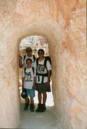
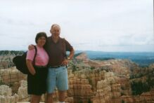
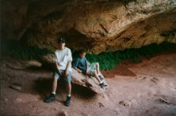
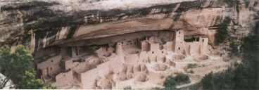

Home : National Park Trip : Week 3
We had a busy day today. When we got up between 7:30 and 8:00 we cooked breakfast. We had bacon, eggs and home fries. We left the campground about 10:30. From there we went to Bryce Canyon where we went to the most beautiful and breathtaking overlook yet, Inspiration point.  After we left, it looked like it was going to rain. Then we went to St. Dominic’s Mission Church for 12:15 Mass. It was a cute little church and a nice Mass. Then we headed to Cedar Breaks National Monument. On the way it poured. It was a beautiful place, but at 10,000 feet it was cold.
We did not stay for long since we didn’t have sweatshirts with us. Then we went to different viewpoints including an 11,500 foot mountain peak! Then we headed home. On the way I finished To Kill a Mockingbird. We got back at around 5:00 and Mark and I hung around the rec room while Mom and Dad cooked dinner. For dinner we had canned ham, rice and beets. Afterwards Mark fed the horses. Mom and Dad wrote postcards and I started The Illiad (it is a really confusing book).
Off to Zion this morning. The day started off mostly cloudy again, but the sun came out as we got to the park- less than an hour away. We passed through huge multicolored rock mounds as we came into the park. We stopped at the canyon overlook trail, right before the tunnel into the valley. We hiked up to the overlook for a spectacular view of the valley and canyon. We went through the 1.1 mile long tunnel into Zion Canyon. We drove the road as far as we could into the canyon, hoping to beat the crowds. We didn’t succeed in doing that, there was lots of traffic and people, the most we’ve seen anywhere so far. Still, we found a parking place and had a nice walk along the river to the point where the canyon narrow and the trail ends. Beautiful sheer walls and hanging gardens were the scenery along the trail.
We had a picnic lunch at the Grotto picnic area then drove to the visitor center for a ranger talk on the park’s geology and a movie about the park. We drove out of the park into the town of Springdale. By this time the sun was really hot and we finally felt like we were in the desert. We bought an ice cream and a sticker for the camper, then decided to head home so the boys could swim in the pool. Unfortunately, when we got back the pool was drained! Evidently it had been flooded with mud in the thunderstorm the other day and they hadn’t been able to refill it yet. We had another thunderstorm while cooking dinner then read and played spades until bedtime.
It was still overcast and dreary with a few showers so we didn’t hustle out to the Grand Canyon. The boys slept in a little. We were on the road by 10:30 AM. We stopped in Kanab on the Utah/Arizona border to grocery shop for our three days in the canyon. Drove through barren desert land then climbed 3-4,000 feet to get on the Kiabab Plateau. Once again, pretty trees, aspens and firs. Turned the clock back, Arizona keeps standard time. Beautiful campsite on the outer edge of the North Rim. It rained on the way in, stopped when we set up and started again, cool and damp weather. We can walk to the edge, about 4 campsites away. We made ramen and hot dogs for lunch and a nice steak over the campfire for dinner. We played spades again, the boys are getting better.
It was a cruddy day. In the morning it rained a lot. About 11:06 it let up. I got out of the camper and found my friends! Then we went to the lodge and got dinner reservations. We came back to eat ramen. Then I went to play cards with my friends. Later I was going through Tom’s belongings and Dad got mad. We went to a sight seeing place, then took showers. The dinner was great! We came back, played cards and went to bed.
We had a really busy day starting at 2:00 AM with a giant thunderstorm that woke everyone up. In the morning we got up early and ate breakfast while Mom did laundry. Then dad dropped Mark and I off for the mule ride. I had a slow one named Ernie and Mark had a disgusting one named Festus. It was a fun hour riding them. When we got back we met Mom at the Lodge where they had breakfast. Then we went to a pretty viewpoint called Cape Royal. It is the only place where you can see the Colorado River on the North Rim. When we got back we had lunch and almost left because of possible T-storms. It cleared up. Dad and I went for a 4 mile hike in the Canyon. When we got back we had hot tacos. Then Dad and I took showers.
Finally a bright and sunny day. Time to leave the canyon. We drove 40 miles to Jacob Lake and stopped for gas. The attendant there sold me on an oil change (which we needed). Mom drove down off the Kaibab Plateau. When we stopped at a scenic overlook to see the Vermillion Cliffs, we noticed the brakes were smoking! I guess Mom had been riding them too much. After letting them cool a bit, I drove the rest of the way down then across the Colorado at Marble Canyon. We saw some brightly colored formations where we turned off US 89 onto US 160. We stopped in Tuba City and had pizza for lunch. We were the only Anglo’s in the place-everyone else was Indian.
Mom drove across the desert to Four Corners where we stopped for pictures. We looked at some Navaho crafts and had some fry bread. Then we drove on through Cortex, Colorado to Mesa Verde.
We found a nice campsite in the park after driving up lots of switchbacks onto the mesa. It was warm while we set up, but cooled off quickly when the sun went down. We had chili for dinner and went to bed fairly early.
What a nice day! Headed up the mesa, Jim driving of course! Stopped and walked Spruce House, one of the Anaszai cliff dwellings. They lived on the mesa, the pit house ruins were from 500-600 AD, then pueblo foundations and finally the cliff dwellings from 1200 - 1300 AD. We took a formal ranger led tour of Cliff House, it was wonderful. Drove about on the mesa, had a picnic lunch, explored various sites and back to the campground. Too late for Mass tonight, not much food. We bought hamburger and buns and cooked them slowly over the coals. (Not many coals either.) I made hashbrowns, ketchup for veggies. We all took  showers, 10¢ to get in and $1.00 for a shower. We assisted aman from New Mexico who had locked his keys in his car, it’s nice to do. Our day ended with a Native American story teller, the park was having an arts and crafts festival and the evening program. We caught the last portion, it was great.
A beautiful campsite, not many people, many deer. I saw a mother and baby when I got up this morning. I’d like to stay longer. Nice first touch of Colorado.
{kind=link}
{kind=link}